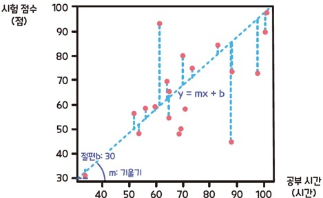

import numpy as np
import pandas as pd
- 가설 검정
8.1. 통계적 가설 검정
- 통계적 가설(statistical hypothesis)
- 연구 대상인 모집단의 특성(모수)에 대해 세운 가설
- 기존에 알려진 사실에 기반하지만, 아직 통계적으로 검증되지 않은 설명이나 주장
- 귀무가설(null hypothesis; \(H_0\))
- 일반적으로 현재의 상태가 유지되거나, 변화가 없음을 나타냄(효과 없음, 차이 없음)
- 수식에서는 = 기호로 표현됨
- 예: A약과 B약의 효과는 차이가 없다 (\(H_0: \mu_A = \mu_B\))
- 대립가설(alternative hypothesis; \(H_1\))
- 연구자가 입증하고자 하는 가설(효과 있음, 차이 있음)
- 수식에서는 >, <, ≠ 기호로 표현됨
- 예: A약이 B약보다 효과가 좋다 (\(H_1: \mu_A > \mu_B\))
- 통계적 가설 검정(statistical hypothesis test)
- 귀무가설이 참이라고 가정할 때, 수집된 데이터가 귀무가설과 얼마나 일치하는지를 검정하는 과정
- 데이터가 귀무가설과 일치하지 않을수록, 대립가설을 지지하는 통계적 근거가 강하다고 판단 → 귀무가설 기각(reject \(H_0\))
- (예) 형사 재판에서 피고인 A씨는 무죄일까? 유죄일까?
- 자백을 하지 않는 한 실제로 범죄를 저질렀는지는 알 수 없다. 증거(데이터)를 통해 무죄인지 유죄인지 판단하자(가설검증).
- 모수(실제 범죄행위 여부)에 대한 두 가지 주장 → 이 중 무엇이 귀무가설? 대립가설?
- A씨는 실제로 범죄를 저지르지 않았다(무죄)
- A씨는 실제로 범죄를 저질렀다(유죄)
- 대한민국 헌법 제27조 제4항 - 형사피고인은 유죄의 판결이 확정될 때까지 무죄로 추정된다.
- 귀무가설 \(H_0\) : 실제로 범죄를 저지르지 않았다(무죄)
- 대립가설 \(H_1\) : 실제로 범죄를 저질렀다(유죄)
- 무죄를 가정하고 살펴봤을 때, 범죄의 증거가 충분하다면 유죄로 판결함
- “
무죄를 가정=귀무가설이 참이라고 가정”하고 살펴봤을 때, - “
범죄의 증거=무죄가 아니라는 증거=귀무가설과 일치하지 않는 증거”가 충분하다면 - “
유죄로 판결함=귀무가설을 기각함”
- “
- “귀무가설을 기각하지 않는다” 의 의미
- 귀무가설이 반드시 참이라는 뜻이 아니며, 단지 귀무가설을 유지하는 상태임
- 즉 수집된 데이터로는 귀무가설이 틀렸다고 판단할 충분한 증거가 없다는 의미
- 통계적 가설 검정 절차
- 가설 설정
- 유의수준 α 결정
- 귀무가설이 참인데도 불구하고 이를 잘못 기각하는 최대 허용 확률
- 일반적으로 1%, 5%, 10%를 사용함
- p-value 계산
- 귀무가설이 참일 때, 관측된 데이터보다 극단적인 데이터가 나올 확률
- p-value가 작을수록 데이터가 귀무가설과 일치하지 않는다는 의미
- 가설 검정 및 의사결정
p-value < α: 귀무가설 기각(통계적으로 유의하다; statistical significant)- 가설 검정 결과는 최종적인 의사결정(정책 수립, 제품 출시, 실험 중단 등)의 근거로 활용함
8.2. t-test
- 두 집단의 평균 차이를 비교하는 데 사용되는 통계적 검정 방법
- 전제 조건
- 정규성 가정 : 각 집단의 데이터가 정규분포를 따른다고 가정함
- 등분산성 가정 : 두 집단의 분산이 같다고 가정함
- 가설 형태
- 귀무가설 \(H_0\) : 집단1과 집단2의 평균은 같다
- 대립가설 \(H_1\) : 집단1과 집단2의 평균은 같지 않다(양측검정), 집단1이 집단2보다 평균이 더 크다/작다(단측검정)
| 구분 | 설명 |
|---|---|
| 독립표본 t-test | - 서로 독립된 두 집단의 평균 비교 - (예) A반과 B반의 시험 점수 비교 |
| 대응표본 t-test | - 짝지은 두 집단의 평균 비교 - (예) 운동 전과 후의 체중 변화, 일란성 쌍둥이의 책임감 비교 |
## 실습 데이터 : penguins 데이터셋
import seaborn as sns
penguins = sns.load_dataset('penguins')# species: 펭귄 종(Adelie, Chinstrap, Gentoo)
# island: 서식하는 섬(Torgersen, Biscoe, Dream)
# bill_length_mm: 부리 길이(mm)
# bill_depth_mm: 부리 깊이(mm)
# flipper_length_mm: 지느러미 길이(mm)
# body_mass_g: 체질량(g)
# sex: 성별(Male, Female)
penguins.info()<class 'pandas.core.frame.DataFrame'>
RangeIndex: 344 entries, 0 to 343
Data columns (total 7 columns):
# Column Non-Null Count Dtype
--- ------ -------------- -----
0 species 344 non-null object
1 island 344 non-null object
2 bill_length_mm 342 non-null float64
3 bill_depth_mm 342 non-null float64
4 flipper_length_mm 342 non-null float64
5 body_mass_g 342 non-null float64
6 sex 333 non-null object
dtypes: float64(4), object(3)
memory usage: 18.9+ KB## 독립표본 t-test : Adelie와 Chinstrap의 평균 부리 길이(bill_length_mm) 비교
## 방법1 : scipy 사용
from scipy.stats import ttest_ind, shapiro, levene
# 1. 두 집단 데이터 (결측치 제거)
bill_length1 = penguins[penguins['species'] == 'Adelie']['bill_length_mm'].dropna()
bill_length2 = penguins[penguins['species'] == 'Chinstrap']['bill_length_mm'].dropna()
# 2. 정규성 검정
stat1, p1 = shapiro(bill_length1)
stat2, p2 = shapiro(bill_length2)
print('[Shapiro-Wilk test]')
print(f'Adelie: W={stat1:.3f}, p-value={p1:.3f}')
print(f'Chinstrap: W={stat2:.3f}, p-value={p2:.3f}\n')[Shapiro-Wilk test]
Adelie: W=0.993, p-value=0.717
Chinstrap: W=0.975, p-value=0.194
# 3. 등분산성 검정
stat3, p3 = levene(bill_length1, bill_length1)
print("[Levene's test]")
print(f'F={stat3:.3f}, p-value={p3:.3f}\n')[Levene's test]
F=0.000, p-value=1.000
# 4. 독립표본 t-test
t_stat, p_val = ttest_ind(bill_length1, bill_length2, equal_var=True)
print(f'[Independent t-test]')
print(f't={t_stat:.3f}, p-value={p_val:.3f}')[Independent t-test]
t=-23.802, p-value=0.000## 독립표본 t-test : Adelie와 Chinstrap의 평균 부리 길이(bill_length_mm) 비교
## 방법2 : statsmodels 사용
from statsmodels.formula.api import ols
# 독립표본 t-test
penguins2 = penguins[penguins['species']!='Gentoo']
model = ols('bill_length_mm ~ C(species)', data=penguins2).fit()
print(model.summary()) OLS Regression Results
==============================================================================
Dep. Variable: bill_length_mm R-squared: 0.723
Model: OLS Adj. R-squared: 0.722
Method: Least Squares F-statistic: 566.5
Date: Thu, 31 Jul 2025 Prob (F-statistic): 2.01e-62
Time: 02:12:30 Log-Likelihood: -542.08
No. Observations: 219 AIC: 1088.
Df Residuals: 217 BIC: 1095.
Df Model: 1
Covariance Type: nonrobust
===========================================================================================
coef std err t P>|t| [0.025 0.975]
-------------------------------------------------------------------------------------------
Intercept 38.7914 0.235 164.997 0.000 38.328 39.255
C(species)[T.Chinstrap] 10.0424 0.422 23.802 0.000 9.211 10.874
==============================================================================
Omnibus: 0.164 Durbin-Watson: 2.945
Prob(Omnibus): 0.921 Jarque-Bera (JB): 0.077
Skew: 0.045 Prob(JB): 0.962
Kurtosis: 3.020 Cond. No. 2.42
==============================================================================
Notes:
[1] Standard Errors assume that the covariance matrix of the errors is correctly specified.## 대응표본 t-test : 학습 프로그램 참여 전후 평균 시험 점수 비교
from scipy.stats import ttest_rel, shapiro, levene
# 1. 학습 프로그램 참여 전후 시험 점수 데이터
pre_scores = [68, 74, 71, 69, 75, 65, 72, 78, 70, 73, 67, 76, 74, 71, 69, 68, 77, 72, 70, 74]
post_scores = [72, 78, 75, 74, 80, 68, 75, 83, 75, 77, 70, 80, 78, 75, 73, 72, 82, 76, 74, 78]
df = pd.DataFrame({'pre': pre_scores, 'post': post_scores})
# 2. 정규성 검정
stat1, p1 = shapiro(pre_scores)
stat2, p2 = shapiro(post_scores)
print('[Shapiro-Wilk test]')
print(f'Pre_scores: W={stat1:.3f}, p-value={p1:.3f}')
print(f'Post_scores: W={stat2:.3f}, p-value={p2:.3f}\n')[Shapiro-Wilk test]
Pre_scores: W=0.984, p-value=0.975
Post_scores: W=0.983, p-value=0.966
# 3. 대응표본 t-test
t_stat, p_val = ttest_rel(pre_scores, post_scores)
print(f'[Paired t-test]')
print(f't={t_stat:.3f}, p-value={p_val:.3f}')[Paired t-test]
t=-28.617, p-value=0.0008.4. ANOVA
- 여러 집단의 평균 차이를 비교하는 데 사용되는 통계적 검정 방법
- 전제 조건
- 정규성 가정 : 각 집단의 데이터가 정규분포를 따른다고 가정함
- 등분산성 가정 : 모든 집단의 분산이 동일하다고 가정함
- 독립성 가정 : 각 집단의 데이터는 서로 독립적이어야 함
- 가설 형태
- 귀무가설 \(H_0\) : 모든 집단의 평균은 같다
- 대립가설 \(H_1\) : 적어도 하나의 집단 평균은 다르다
- 사후 검정(Post-hoc test)
- ANOVA 결과에서 유의한 경우, 어떤 집단 간에 차이가 있는지를 확인하기 위해 추가 분석을 수행해야 함
- 대표적인 방법으로는 Tukey HSD, Bonferroni 등이 있음
## One-way ANOVA : 암컷 펭귄의 종에 따른 평균 체질량 비교
## 방법1 : scipy 사용
from scipy.stats import f_oneway
from statsmodels.stats.multicomp import pairwise_tukeyhsd
# 1. 세 집단 데이터 (결측치 제거)
female = penguins[penguins['sex']=='Female']
body_mass1 = female[female['species'] == 'Adelie']['body_mass_g'].dropna()
body_mass2 = female[female['species'] == 'Chinstrap']['body_mass_g'].dropna()
body_mass3 = female[female['species'] == 'Gentoo']['body_mass_g'].dropna()
# 2. 정규성 검정
stat1, p1 = shapiro(body_mass1)
stat2, p2 = shapiro(body_mass2)
stat3, p3 = shapiro(body_mass3)
print('[Shapiro-Wilk test]')
print(f'Adelie: W={stat1:.3f}, p-value={p1:.3f}')
print(f'Chinstrap: W={stat2:.3f}, p-value={p2:.3f}')
print(f'Gentoo: W={stat3:.3f}, p-value={p3:.3f}\n')[Shapiro-Wilk test]
Adelie: W=0.977, p-value=0.199
Chinstrap: W=0.963, p-value=0.306
Gentoo: W=0.981, p-value=0.511
# 3. 등분산성 검정
stat3, p3 = levene(body_mass1, body_mass2, body_mass3)
print("[Levene's test]")
print(f'F={stat3:.3f}, p-value={p3:.3f}\n')[Levene's test]
F=0.036, p-value=0.965
# 4. 일원분산분석
F, p_value = f_oneway(body_mass1, body_mass2, body_mass3)
print(f'[One-way ANOVA]')
print(f'F={F:.3f}, p-value={p_value:.3f}\n\n')[One-way ANOVA]
F=393.246, p-value=0.000
# 5. 사후 검정 : Tukey HSD 방법 사용
tukey = pairwise_tukeyhsd(endog=female['body_mass_g'], groups=female['species'], alpha=0.05)
print(tukey.summary()) Multiple Comparison of Means - Tukey HSD, FWER=0.05
===============================================================
group1 group2 meandiff p-adj lower upper reject
---------------------------------------------------------------
Adelie Chinstrap 158.3703 0.0179 22.3208 294.4197 True
Adelie Gentoo 1310.9058 0.0 1195.6491 1426.1624 True
Chinstrap Gentoo 1152.5355 0.0 1011.0062 1294.0648 True
---------------------------------------------------------------## One-way ANOVA : 암컷 펭귄의 종에 따른 평균 체질량 비교
## 방법2 : statsmodels 사용
import statsmodels.api as sm
# 4. 일원분산분석
model = ols('body_mass_g ~ C(species)', data=female).fit()
anova_table = sm.stats.anova_lm(model, typ=2)
print(anova_table) sum_sq df F PR(>F)
C(species) 6.035002e+07 2.0 393.246478 6.775686e-63
Residual 1.243076e+07 162.0 NaN NaN8.5. 회귀분석
- 하나 이상의 독립변수(x)가 종속변수(y)에 미치는 영향력의 크기를 수학적 관계식(모형)으로 추정하는 통계적 검정 방법
- 독립변수(independent variable) : 다른 변수의 변화를 일으키는 변수
- 종속변수(dependent variable) : 다른 변수의 영향으로 변화하는 변수
- 독립변수가 종속변수에 미치는 영향이 통계적으로 유의한지 검정하고, 이를 바탕으로 새로운 독립변수 값에 대한 종속변수의 값을 예측함
- 독립변수 개수에 따른 구분
- 단순선형 회귀분석
- 독립변수가 1개인 경우
- 모형 : \(y = \beta_0 + \beta_1x + \epsilon\)
- 다중선형 회귀분석
- 독립변수가 2개 이상인 경우
- 모형 : \(y = \beta_0 + \beta_1x_1 + \beta_2x_2 + \cdots + \beta_p x_p + \epsilon\)
- 단순선형 회귀분석
- 일반적으로 최소제곱추정법(OLS)을 통해 주어진 데이터에 가장 적합한 회귀선을 구함 \[\hat{y} = b_0 + b_1x\] \[\hat{y} = b_0 + b_1x+ b_2x_2 + \cdots + b_p x_p\]
- 잔차(residual) : 관측값과 예측값의 차이, \(y-\hat{y}\)
- 결정계수(\(R^2\))
- 회귀모형이 데이터를 얼마나 잘 설명하는지 나타내는 지표
- 0에서 1 사이의 값을 가지며, 1에 가까울수록 회귀모형의 설명력이 높음

## 다중선형 회귀분석 : 펭귄의 체질량에 영향을 미치는 요인
from scipy.stats import pearsonr
# 1. 결측치 제거
penguins_df = penguins.dropna(axis=0)
# 2. 상관계수
print(penguins_df.select_dtypes(include='number').corr()) bill_length_mm bill_depth_mm flipper_length_mm \
bill_length_mm 1.000000 -0.228626 0.653096
bill_depth_mm -0.228626 1.000000 -0.577792
flipper_length_mm 0.653096 -0.577792 1.000000
body_mass_g 0.589451 -0.472016 0.872979
body_mass_g
bill_length_mm 0.589451
bill_depth_mm -0.472016
flipper_length_mm 0.872979
body_mass_g 1.000000 # [참고] 상관분석
r, p_value = pearsonr(penguins_df['bill_length_mm'], penguins_df['bill_depth_mm'])
print(f'\n[Pearson Correlation between bill length and bill depth]')
print(f'r={r:.3f}, p-value={p_value:.3f}\n\n')
[Pearson Correlation between bill length and bill depth]
r=-0.229, p-value=0.000
# 3. 다중선형 회귀분석
model = ols('body_mass_g ~ C(species) + C(island) + C(sex) + bill_length_mm + bill_depth_mm + flipper_length_mm', data=penguins_df).fit()
print(model.summary()) OLS Regression Results
==============================================================================
Dep. Variable: body_mass_g R-squared: 0.875
Model: OLS Adj. R-squared: 0.872
Method: Least Squares F-statistic: 284.1
Date: Thu, 31 Jul 2025 Prob (F-statistic): 1.85e-141
Time: 02:12:32 Log-Likelihood: -2353.6
No. Observations: 333 AIC: 4725.
Df Residuals: 324 BIC: 4760.
Df Model: 8
Covariance Type: nonrobust
===========================================================================================
coef std err t P>|t| [0.025 0.975]
-------------------------------------------------------------------------------------------
Intercept -1500.0291 575.822 -2.605 0.010 -2632.852 -367.207
C(species)[T.Chinstrap] -260.3063 88.551 -2.940 0.004 -434.513 -86.100
C(species)[T.Gentoo] 987.7614 137.238 7.197 0.000 717.771 1257.752
C(island)[T.Dream] -13.1031 58.541 -0.224 0.823 -128.271 102.065
C(island)[T.Torgersen] -48.0636 60.922 -0.789 0.431 -167.915 71.788
C(sex)[T.Male] 387.2243 48.138 8.044 0.000 292.521 481.927
bill_length_mm 18.1893 7.136 2.549 0.011 4.150 32.229
bill_depth_mm 67.5754 19.821 3.409 0.001 28.581 106.570
flipper_length_mm 16.2385 2.939 5.524 0.000 10.456 22.021
==============================================================================
Omnibus: 1.114 Durbin-Watson: 2.167
Prob(Omnibus): 0.573 Jarque-Bera (JB): 1.101
Skew: 0.139 Prob(JB): 0.577
Kurtosis: 2.958 Cond. No. 7.59e+03
==============================================================================
Notes:
[1] Standard Errors assume that the covariance matrix of the errors is correctly specified.
[2] The condition number is large, 7.59e+03. This might indicate that there are
strong multicollinearity or other numerical problems.